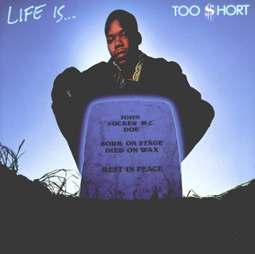

The Too $hort Page

I feel like I need to offer some type of apology(in the Thomas Paine sense of the word)
for Todd "Too $hort" Shaw and "Westcoast" rap in general. I don't really even listen
to
that much of it anymore, but I used to, and it's still in my blood, if you will.
First, I'd like to divide Mr. Shaws music into two categories. In one, I would place such
songs as "Life is...Too $hort", "It's Your Life ... Don't Be Stupid","The Ghetto",
"Gettin'
It", etc. In the other, would be such songs as
"B****** Betty", "All My B****** are Gone",
"$hort Dog Ain't Nothin' But A Dog", etc.
Basically, The division is between those songs
that are fairly clean in content and those
that ,well, aren't. A brief sampling of his music
show that few of
his songs fit neatly into either category, but I gotta start somewhere.
As far as
the first category, I find them quite defensible on any grounds and wish Mr. Shaw
would
do more, similar reality-check raps. The Norman Vincent Peale of Underground Rap,
$hort
notes:
"You can take back all the things you get, but you can't take back the days
you live,
Life is ... to some people heaven on earth livin' every single day for what it's
worth.
I live my life just how I please, satisfying one person I know that's me.
Work hard for the thinks I acieve in life, and never rap fake when I'm on the mic.
Cause if a dream is all you got, homeboy,
you got to turn that dream into the real
McCoy.
It's your life ... don't be stupid, though, 'cause if you waste it, you'll know,
Life is ... Too $hort."
"Life is ... Too $hort" -- Too $hort"
Many of Too $hort's raps exhibit similar grow-up-and-accept-responsibility messages.
Another choice passage follows:
"It's time to come up, put your dollar bills in the air,
He said 'Meet me at the White House' and I was there.
'Cause I'm one in a million, black men rising
They wanna keep me down, but I'm always surviving.
I spend my money in the hood, I know it's all good
And you should do the same, I told you peep the game from Too $hort
I know I'm the man. I lend my brother a hand because I know I can.
I keep going and going, but I'm not the pink bunny,
Instead of beating on a drum, I never stopped thinking money.
I give it all I can, if you don't you slip,
I can't wait to get to heaven just to have a grip.
When I was broke, I couldn't afford a meal,
But now I'm rich I can't be fake, I've got to keep it real.
It's been a long time, baby, since I first got down,
But I still keep making these
funky sounds.
"Gettin' It" -- Too $hort
In case you're wondering, I'm white, but I still relate to $hort's dedication to
reaching
his dreams and keeping his feet on the ground.
Nasty Rhymes
Now for the grayer area, Todd's "Nasty Rhymes." I can't defend these with quite the
enthusiasm as the last category. Historically, Too $hort's style was incepted in
Oakland,
California in the close aftermath of the filming of The Mack, a film
about(among
other things) a pimp who uses his power and money to benefit his community.
This movie was
quite the rage, and soon everyone was immitating its hero, Goldie.
It was in this setting
that $hort's nasty rhymes first flourished, and I think that his
maintaining this style
is related to the fact that it's what earned him fame and fortune.
He even laments his
situation on "So What'cha Sayin'" off Gettin' It when
he says, "I always spoke my
mind about what was goin' on with my folks in my community
and all I got credit for was
saying one m***********' word." That word is b*****.
I would agree with those who lack
sympathy as long as he continues to say it
regularly.
On the other hand, when I first started listening to $hort, I was drawn to his
nasty
rhymes as well as his upbeat message. This was due to my frustration with being
a nice
guy and watching all the girls get with jerks. As someone who arguably worships
women,
I found it therapeutic to listen someone spitting pimp philosophy. Even in
my greatest
frustration, however, I've always heard these rhymes with a strong sense
of euphemism,
taking such lines as "I ain't with no marriage and a wedding ring" as
the cry of one who
has been burned by love. In an interview, Mr. Shaw said his goal
was to be "friends with
all the beautiful women". Such songs as "I must Confess"
and "I've Been Watching you
(Move Your Sexy Body)" seem to indicate an interest in a
respectful, monogamous
relationship. If Todd Shaw is a misogynist, that's a pity,
because he's obviously very
bright.